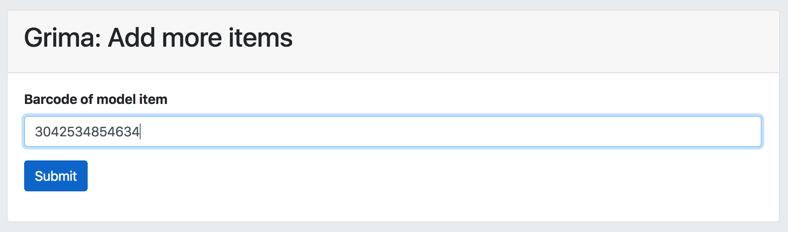
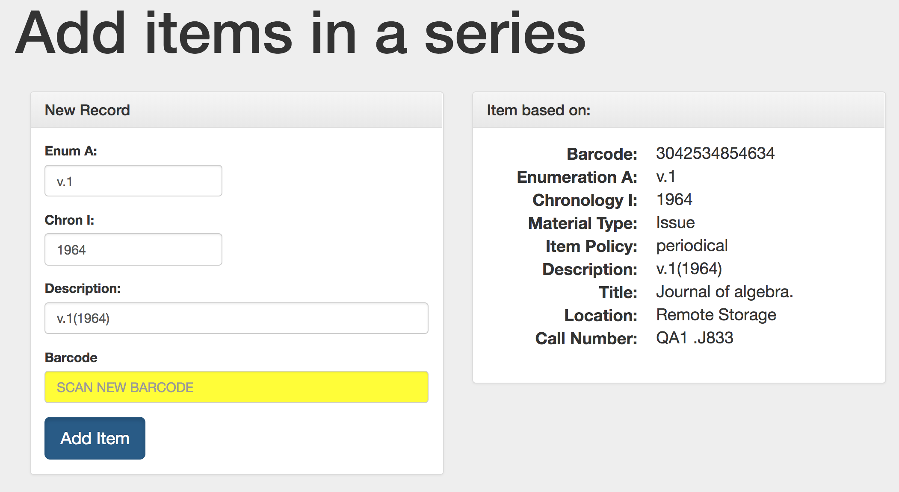
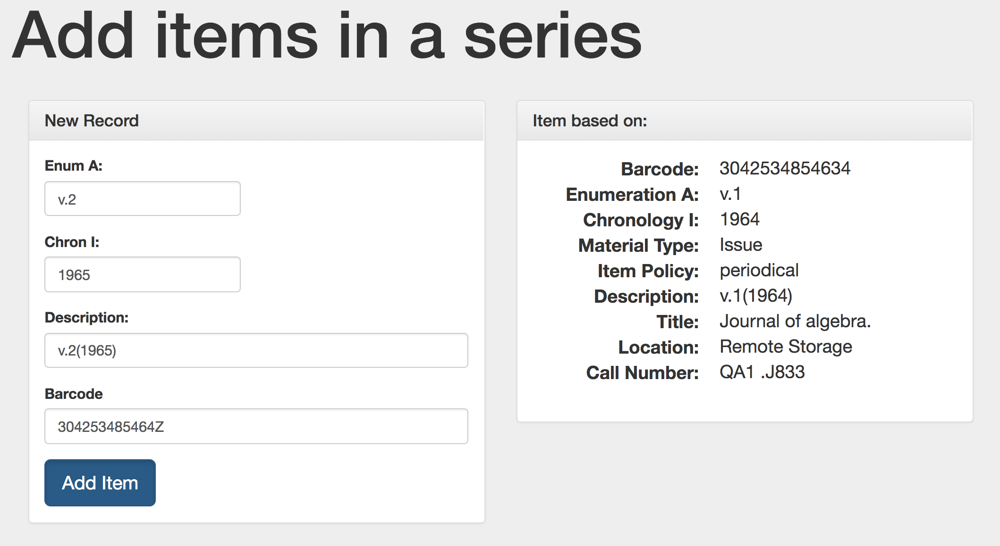

This grima helps you add multiple items to a record, such as a set or serial record. After adding each record, you will be prompted to add a new one, with the option of changing fields like Enumeration and Chronology.
The first form asks for a model item. If you're adding the newest item to a serial, enter the barcode for the most recent issue, confirming that all fields (item policy, etc) are correct. If the holding you're adding items to doesn't have any yet, go ahead and add the first one as you normally would, making sure all fields are as you want them. Then enter that barcode into the form: 
The next form will show you some of the properties of the model item (on the right), and it also enter some of those into the form on the left, prompting you to create your new item: 
Modify the fields you need to, such as incrementing the Enumeration and Chronology to add as the next item. No need to "generate" the description; it will change as you type! Then scan in the new item's barcode: 
Submit the form to create the new item. After this is done,
it will bring up the form again, using the item you just added
as the next model:
Now you can quickly add lots of items in a sequence!
 created with the free version of
Markdown Monster
created with the free version of
Markdown Monster